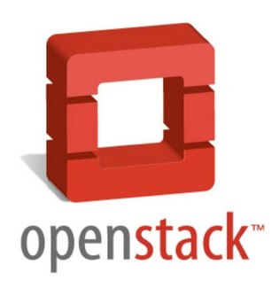

Sobre nosotros
- Profesores de Formación Profesional en el IES Gonzalo Nazareno de Dos Hermanas (Sevilla)
- Experiencia como Administradores de sistemas GNU/Linux
- Detectamos demanda de formación en cloud computing
- 2011-2012: Proyecto de Innovación Mº Educación
- Trabajando con OpenStack desde 2011-2012
Infraestructura: Evolución
¿A qué llamamos infraestructura?
Equipos para procesamiento, conexión y almacenamiento de datos
Evolución
- Equipos físicos
- Máquinas virtuales
- Infraestructura en la nube
Infraestructura tradicional
- Adquisición de equipos
- Montaje físico
- Instalación y configuración "manual"
- Interconexión a través de redes físicas
- Gestión del almacenamiento NAS o SAN
- Estática: Se mantienen las mismas configuraciones durante años
- Usuarios sin acceso directo
Virtualización
- Dentro de un solo equipo físico se ejecutan varias MVs
- El sw para la gestión de MVs se denomina hipervisor
- Se conectan las MVs entre sí en redes virtuales
- Sin cambios relevantes en almacenamiento
- Gestión similar a la infraestructura tradicional
Infraestructura en nube
- Virtualización de la red
- Virtualización del almacenamiento
- Agrupamiento de los recursos
- Dinámica
- Puede cambiar rápidamente en función de las necesidades
- Configuración automática
- El usuario sí puede gestionar su infraestructura
Cambios para el administrador y cambios para el usuario
Cloud Computing. Características
- Servicio disponible de forma automática y a demanda
- Accesible a través de la red
- Modelo multi-tenancy
- Se comparten los recursos con otros usuarios
- Debe garantizarse aislamiento y seguridad entre
usuarios
- Los recursos se agrupan en pools
- Elasticidad
- Pago por uso
Fuente: The NIST Definition of Cloud Computing
... as a Service (...aaS)
- Modelo de negocio no basado en la venta de licencias o
hardware
- Oferta de servicios con caracterísicas de cloud
- Habitualmente se definen tres capas o niveles: SaaS, PaaS e
IaaS
Software as a Service (SaaS)
Aplicación como servicio en la nube
- El usuario utiliza una aplicación a través de la web en
lugar de tenerla instalada en el propio equipo.
Aviso: No todas las aplicaciones web son SaaS, deben cumplir
con las características.
- Utilizado por cualquier usuario
- Ya lo usamos, pero se prevé que se use cada vez más
- Ejemplos: Servicios de Google, Office365
Platform as a Service (PaaS)
Plataforma de desarrollo web en la nube
- Utilizado por desarrolladores de software
- Se proporciona toda la plataforma de desarrollo y despliegue
de una aplicación al desarrollador
- Ejemplos: Google App Engine, Windows Azure, Heroku,
Openshift, CloudFoundry
Infrastructure as a Service (IaaS)
Infraestructura como servicio en la nube
- Utilizado principalmente por administradores de
sistemas
- Se proporciona principalmente capacidad de cómputo, redes y
diversos modos de almacenamiento
- Ejemplos: Amazon Web Services, Joyent, Windows Azure,
Rackspace Cloud Servers, Google Compute Engine
Tipos de despliegues
- Público Una empresa ofrece servicios a terceros, encargándose
de toda la gestión del Cloud.
- Privado Una organización configura sus propios recursos de
forma mucho más flexible en una nube. En inglés también se
denomina "On premise cloud"
- Híbrido Se utilizan recursos de la nube privada o de una o
varias nubes públicas en función de las características de cada
caso o las necesidades puntuales que haya. Normalmente utilizan
una API común que permita una buena integración.
IaaS público
Una empresa ofrece este servicio a terceros,
proporcionando:
- Control sobre la gestión de su infraestructura.
- El usuario es el encargado de la configuración,
actualización y mantenimiento de esta infraestructura.
- Finalmente la seguridad, el aislamiento, la
confidencialidad de los datos y la disponibilidad de los
servicios dependen del proveedor de IaaS
- Usuario puede quedar cautivo del proveedor (Vendor
lock-in)
¿Para qué usar IaaS?
- Viene a competir fuertemente con servidores dedicados,
virtuales o físicos
- También es una tecnología a considerar en clustering
- Típicamente usada por cualquier empresa con departamento de
sistemas para gestionar sus propios servidores a medida
- Además se han incluído nuevas tecnologías de
almacenamiento y redes
- Lo que no pueden ofrecer los servidores dedicados o los
clusters tradicionales es ELASTICIDAD
Ejemplo de servicio en IaaS público
Servicio web de vídeo bajo demanda
Problema: Requitos de hardware muy variables con grandes picos y
valles
Alto coste en infraestructura tradicional
Solución: Clúster con un número de nodos variable en el
tiempo y que se ajuste a la demanda
- Se incluyen balanceadores para repartir la carga
- Se crean de forma automática nuevos servidores cuando se
precisa
- Cuando baja la demanda, se eliminan los servidores que
sobren.
OpenStack
“Plataforma de cloud computing hecha con
software libre para desplegar nubes públicas y privadas,
desarrollada con la idea de ser sencilla de implementar,
masivamente escalable y con muchas prestaciones”

Otras alternativas
- OpenNebula, CloudStack y Eucalyptus
- Software libre
- Más compatibles con AWS
- Probablemente más sencillas de instalar
- Algunos componentes más maduros
- Proyectos más pequeños (pros y cons)
- VMware Vcloud
- Software privativo
- Optimizado para vSphere
- No compite en IaaS pública
Inicios de OpenStack
|
- Cloud propio desde 2005
- Cloud servers (IaaS)
- Cloud files (StaaS)
- Cambia a licencia libre en Abril 2010
|
|
- Comienza a utilizar Eucalyptus, pero lo deja por
ser ''open core''
- Crea el software para IaaS Nebula
- Cambia a licencia libre en Mayo 2010
|
|  |
- Nasa y Rackspace lo inician en Junio de 2010
- OpenStack Compute (nova), deriva de Nebula
- OpenStack Object Store (swift), deriva de cloud
files
|
Versiones de OpenStack
Proyecto muy nuevo, pero con un fuerte ritmo de desarrollo:
| Versión |
Fecha |
Nuevos Componentes |
| Austin |
Octubre 2010 |
Nova y Swift |
| Bexar |
Febrero 2011 |
Glance |
| Cactus |
Abril 2011 |
|
| Diablo |
Septiembre 2011 |
|
| Essex |
Abril 2012 |
Horizon, Keystone |
| Folsom |
Septiembre 2012 |
Quantum, Cinder |
| Grizzly |
Abril 2013 |
|
| Havana |
Octubre 2013 |
Neutron, Heat, Ceilometer |
| Icehouse |
Abril 2014 |
TripleO, Ironic, Trove, Marconi |
- Hasta ahora cada versión incluye importantes modificaciones
respecto a la anterior
- Essex se considera realmente la primera versión
Principios fundacionales
En Septiembre de 2012 se cede el control del proyecto a
la OpenStack
Foundation
¿Qué podemos hacer con OpenStack?
- Ejecutar una instancia de un sistema operativo cualquiera con
cualquier grado de configuración
- Configurar redes complejas
- Acceder a la instancia de forma remota
- Utilizar múltiples volúmenes de almacenamiento adicional
- Realizar instantáneas de la instancia o los volúmenes
- Utilizar almacenamiento de objetos
- Redimensionar la instancia
- Configurar clusters de instancias
- Configurar automáticamente la instancia
- Y un largo etcétera
Y ahora, ¿por dónde continuar?
- Trabajar con un cloud de infraestructura público: Amazon, Windows Azure, Google Compute Engine, StackOps,...
- Si eres desarrollador, tienes que tener experiencia usando una plataforma PaaS: Google App Engine, Windows Azure, Heroku,
Openshift, CloudFoundry
- Si te interesa OpenStack, puedes instalarte una plataforma de prueba: DevStack, RDO,...
- Puedes comenzar a instalar OpenStack, y para ello te recomendamos que conozcas herramientas DevOps: vagrant, ansible, chef, puppet, git, ...
Contacto
Alberto Molina Coballes
alberto.molina@gmail.com // @alberto_molina
José Domingo Muñoz Rodríguez
josedom24@gmail.com // @pledin_jd
informatica@gonzalonazareno.org